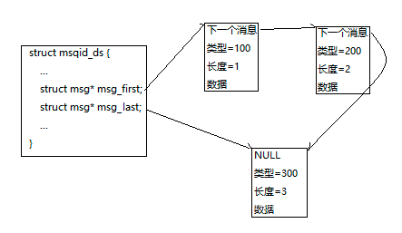
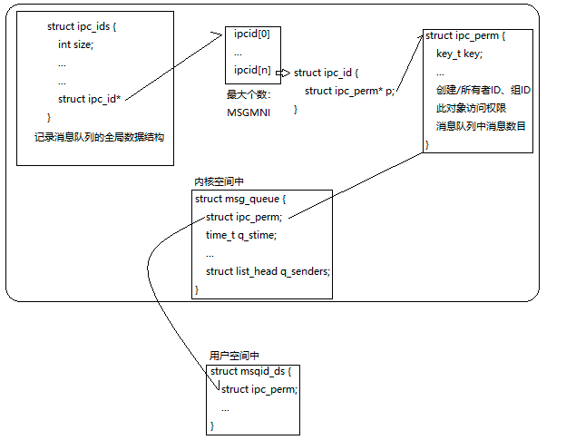

消息队列是一种以链表式结构组织的数据，存放在内核中，是三个IPC对象类型中最具数据操作性的数据传送方式，可以根据数据类型来检索消息，有同步互斥机制，面向数据报，全双工通信
我们可以通过命令查看/删除系统中已有的消息队列ipcs -q/ipcrm -q [msqid]
相关操作（系统调用）：
消息队列创建/打开
int msgget(key_t key, int msgflg);
第一个参数key：给这个消息队列分配的密钥，同创建共享内存一样，系统返回对应共享内存的标识符，失败返回-1，并设置errno
第二个参数msgflg: IPC_CREAT如果不存在就创建，IPC_EXCL如果已经存在则返回失败，位或权限位：可以设置消息队列的访问权限
每创建一个消息队列，就会在用户空间组织这样的一个数据结构，用来设置或返回消息队列的信息
1 | struct msqid_ds { |
添加消息到消息队列中
int msgsnd(int msqid, const void *msgp, size_t msgsz, int msgflg);
msgid:msgget函数返回的消息队列标识符
msgp:指向准备发送的消息，是一个用户自定义的结构体
msgsz:消息⻓度，不含消息类型，最大长度MSGMAX
msgflg:IPC_NOWAIT队列满非阻塞，返回EAGAIN错误，0阻塞
1 | msgp的格式： |
将数据添加到队列尾，并且更新msg_last

从消息队列中接收消息
ssize_t msgrcv(int msqid,void *msgp,size_t msgsz,long msgtyp,int msgflg);
msgid: msgget函数返回的消息队列标识符
msgp: 指针指向准备接收的消息
msgsz: 是msgp指向的消息⻓度，不含消息类型
msgtype: 它可以实现接收优先级的简单形式
若 = 0 - 读取消息队列中最早的消息，以先进先出的方式读取消息
若 > 0 - 读取消息队列类型为msgtyp最早的消息
若 < 0 - 读取消息队列中，消息类型小于或等于msgtyp绝对值的消息中最小消息类型的最早消息
msgflg: IPC_NOWAIT设置非阻塞，MSG_NOERROR表示消息大小超过msgsz时被截断，MSG_EXCEPT表示接收类型不等于msgtyp的第一条消息
成功返回实际放到msgp⾥去的字符个数，失败返回-1，并设置errno
控制消息队列
int msgctl(int msqid,int cmd,struct msqid_ds* buf);
msgid: msgget函数返回的消息队列标识符
cmd:
IPC_RMID删除消息队列， IPC_STAT IPC_SET
cmd: IPC_RMID删除消息队列、IPC_STAT获取消息队列的当前关联值、IPC_SET根据buf设置消息队列关联值
buf: 保存着消息队列的模式状态和访问权限的数据结构，输入输出型参数
成功返回0；失败返回-1，并设置errno
从内核看本质
内核维护着一个消息队列的全局数据结构ipc_ids，其中有一个指针指向一个数组。每当创建一个IPC对象内核就会创建一个ipc_perm，并且将它的地址放到结构体ipc_id中，这个数组就是这个结构体ipc_id组成的数组，数组最大的个数就是MSGMNI，所以说消息队列随内核持续，直到内核重新自举或者显示删除该对象为止。类似还有信号量、共享内存

代码实现server和client的交互
https://github.com/Ranjiahao/Linux/tree/master/ipc/MessageQueue